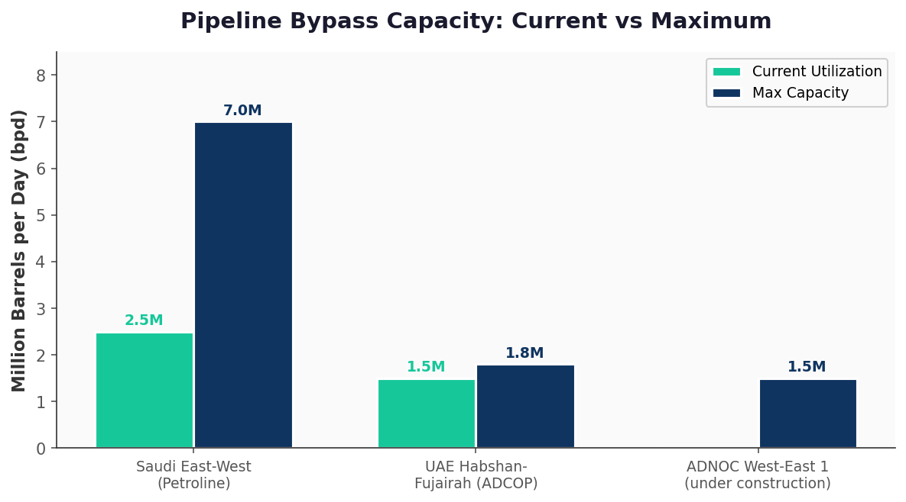

1 Executive Summary
The 2026 Iran War triggered the largest oil supply disruption in modern history, exceeding 1 billion barrels of cumulative lost supply. The Strait of Hormuz — carrying 20-25 million barrels per day (bpd) before the conflict — was almost entirely shut down from February 28 through the June ceasefire. While the post-ceasefire recovery has restored throughput to approximately 15M bpd (including pipeline bypass), this still masks a dangerous reality: the world burned through its emergency oil reserves to bridge the gap, and those reserves are now effectively spent.
The IMF warned on July 15 that global oil buffers have been halved to ~1.2 billion barrels, and at current disruption rates would be exhausted by early 2027. With ceasefire violations recurring and Houthi/Piracy threats escalating in the Red Sea–Bab el-Mandeb corridor, the global energy system is operating without a safety net.
2 Hormuz Throughput & Regional Flow Analysis

The Numbers Dissected
Before the war, approximately 20-21M bpd of petroleum liquids transited the Strait of Hormuz (EIA baseline, H1 2025), representing ~20% of global consumption. An additional 3-4M bpd moved through regional pipelines, bringing total Gulf export capacity to ~24-25M bpd.
During peak crisis (March–May 2026), Hormuz tanker traffic dropped to near-zero — as low as 1.2M bpd — as Iran boarded vessels, laid sea mines, and the IRGC formally closed the strait to US/Israel-aligned shipping on March 27. Pipeline bypass routes surged to ~4.5M bpd but could not offset the lost volume.
Post-ceasefire (July 2026), the situation has partially normalized. Windward data shows 8.5M bpd now transiting the strait via tankers, with pipeline bypass adding another ~6.5M bpd, for a regional total of ~15M bpd. This is a significant recovery from the crisis trough but remains 35-40% below pre-war aggregate flows.
The commonly cited "15M bpd" regional figure can be misleading. It conflates tanker and pipeline flows, potentially overstating maritime recovery. Strait of Hormuz tanker traffic at 8.5M bpd is less than half its pre-war level. The backlog of ~17M barrels of pre-war Saudi oil still clearing through the system inflates the apparent recovery.
3 Strategic Reserves: The Spent Buffer


U.S. Strategic Petroleum Reserve
The SPR has fallen to 319.5 million barrels (week ending July 3, 2026) — the lowest level since April 1983. The drawdown of approximately 91-95M barrels since the Hormuz closure was part of a larger 172M-barrel release authorized by President Trump in the war's second week, coordinated with the IEA. Prior to the war, the SPR stood at 411M barrels, already depleted from historical highs of 727M (2010).
Global Picture
The IEA coordinated release of 400 million barrels from member emergency stocks. Combined with uncoordinated drawdowns from China's estimated 1B+ barrel reserve, total global petroleum reserves fell by approximately 1 billion barrels since the conflict began. The IMF stated on July 15:
"That cushion, however, has been spent. If the disruption were to persist at current rates, that lower bound would be reached by early 2027. Well before that point, prices would likely move sharply higher, as the market would effectively be operating without a safety net."
Three factors prevented worse price shocks: (1) demand destruction in Asia, (2) non-Gulf supply growth from the US, Venezuela, Guyana, and Russia (+2M bpd above 2025 levels), and (3) the reserve drawdown which filled a ~4M bpd deficit almost entirely. But all three buffers are now diminished or exhausted.
4 Pipeline Bypass Infrastructure

Gulf states have aggressively expanded pipeline infrastructure to bypass Hormuz, but the physics of steel and concrete move slower than geopolitics:
- Saudi East-West Pipeline (Petroline): 7M bpd max capacity, currently running at ~2.5-3M bpd. Built during the Iran-Iraq War in the 1980s, this 1,200km twin-pipe system runs from eastern oil fields to the Red Sea port of Yanbu. Saudi Arabia is actively working to expand to full capacity, but this requires significant pump station upgrades and regulatory approvals.
- UAE Habshan-Fujairah (ADCOP): 1.5-1.8M bpd current throughput, with a max design capacity of 1.8M bpd. Exports via Fujairah on the Gulf of Oman bypass Hormuz entirely. Already near maximum utilization.
- ADNOC "West-East 1" (Under Construction): Announced May 15, 2026, this new parallel pipeline was ~50% complete as of May. Target completion: 2027. Would add 1.5M bpd capacity, bringing UAE total bypass to ~3.3M bpd — covering ~65% of the UAE's 5M bpd production target.
- Trucking: Assessed as negligible. The region lacks the road infrastructure and long-haul trucking capacity for meaningful oil movement by land.
The combined bypass capacity of existing pipelines is approximately 4.3M bpd (Saudi 2.5-3M + UAE 1.5-1.8M). Even at full build-out (Saudi 7M + UAE 3.3M = 10.3M), this covers only roughly half of pre-war Hormuz tanker volumes. Hormuz remains irreplaceable in the medium term.
5 Secondary Front: Red Sea, Bab el-Mandeb & Piracy

While Hormuz commands attention, a second threat axis is accelerating in the Red Sea–Bab el-Mandeb corridor. Intelligence sources and maritime monitoring indicate the threat environment is deteriorating:
- Houthi capabilities intact: Despite a lull during the Gaza ceasefire (October 2025) and early Iran war period, Houthi weapons caches remain substantial. The group threatened to close Bab el-Mandeb if the Iran/Lebanon conflict escalated or Gulf states joined the war. Recent cargo vessel attacks near Hodeida (July 5) confirm resumed targeting of commercial shipping.
- Galaxy Leader precedent: The November 2023 hijacking of the Galaxy Leader — partially sunk by April 2026 — demonstrated Houthi capability to board and hold vessels. The ship was used to install radar tracking international maritime traffic before Israeli strikes neutralized it.
- Piracy surge off Horn of Africa: Somali piracy has resurged dramatically in 2026. Three merchant vessels were hijacked in recent months. The IMO reports 44 seafarers held captive in Somali waters. Indian Navy intercepted an attempted pirate attack on a bulk carrier 300nm ENE of Djibouti on July 1. Houthi-backed proxy piracy is assessed as a growing vector — shipping diverted from the Red Sea is being targeted off the Somali coast.
- Coalition gap: The international anti-piracy coalition (CTF-151, Operation Atalanta) that suppressed Somali piracy in the 2010s is not coming back at scale. Resources are committed to the Hormuz escort mission. The vacuum is being exploited.
Expect Houthi attacks to pick up in the Red Sea/Bab el-Mandeb region. Another Galaxy Leader-style hijacking is plausible. Expanded Somali piracy will compound shipping insurance costs and rerouting burdens. The opening of a two-front disruption (Hormuz + Bab el-Mandeb) would force shipping around the Cape of Good Hope, adding 10-14 days transit time and effectively removing 2-3M bpd of effective supply.
6 Price Outlook & Market Implications
Brent crude peaked at $126/barrel on March 8, 2026 — the highest in four years and the largest single-month oil price increase ever recorded. Prices retreated to the $70s during the ceasefire, but renewed hostilities (July 8–13) have pushed Brent back above $86. Analysts are diverging sharply:
- Commonwealth Bank (Vivek Dhar): If Hormuz remains closed, prices could reach $150/bbl — the cost needed to force sufficient Asian demand destruction to balance supply.
- Rabobank: Holding $80/bbl forecast for Q3, noting "geopolitical complacency" is unsustainable long-term.
- Capital Economics: Investors rapidly pricing in further disruption risk; 3-month forward expectations shifting upward.
- IMF: Warns the market is "operating without a safety net" — even small future disruptions will produce outsized price moves.
The key insight: the reserve buffer that absorbed the initial shock no longer exists. Any renewed Hormuz closure — or a Bab el-Mandeb disruption layered on top — would translate directly into price with no institutional cushion. The next disruption will be different.
📝 Sources & Methodology
- US Energy Information Administration (EIA) — Hormuz chokepoint analysis, SPR weekly data
- US Department of Energy — SPR Quick Facts (July 2026)
- International Energy Agency (IEA) — Coordinated emergency release data
- IMF Blog (July 15, 2026) — "Oil reserves eased Iran war price shock, but now they are 'spent'"
- Windward Maritime Intelligence — Hormuz tanker flow data (July 2026)
- Kpler Trade Intelligence — Saudi export flow analysis (July 2, 2026)
- UK Maritime Trade Operations (UKMTO) — Red Sea incident reports
- International Maritime Organization (IMO) — Seafarer captivity data
- CNBC, The Guardian, Reuters, Al Arabiya — Conflict reporting and pipeline expansion data
- War on the Rocks, Castor Vali — Somali piracy resurgence analysis
- Wikipedia — 2026 Strait of Hormuz crisis, Red Sea crisis, East-West Pipeline, Habshan-Fujairah Pipeline (consolidating multiple primary sources)
This report synthesizes open-source intelligence. Figures marked as estimates are derived from the cited sources. Pipeline utilization figures carry ±0.5M bpd uncertainty. Global reserve figures are IEA/IMF estimates and may not reflect non-IEA member holdings (notably China's SPR, estimated at 1B+ barrels but not transparently reported).